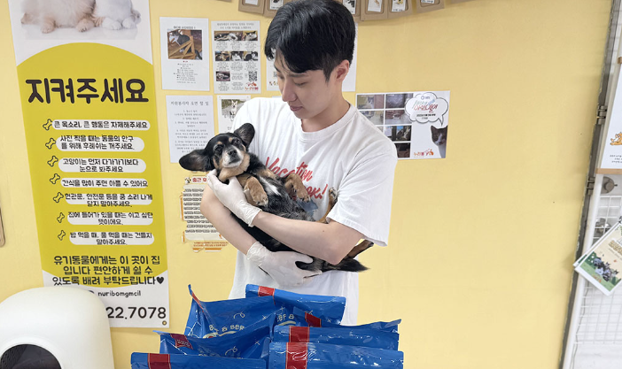
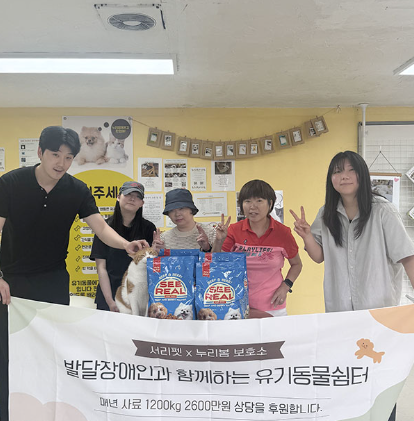
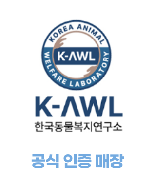

ABOUT US
함께하는 하루가
특별한 기억이 됩니다
봉사로 따뜻한 손길을 전해주세요
서리펫을
소개합니다.
서리(瑞里) :
순우리말로 처음 맺은 사랑의 순수함과
아침 이슬처럼 맑은 감성을 뜻하는 말
서리펫은 맑고 따뜻한 마음으로 반려동물과 사람이 건강한
가족이 되는 순간을 만들어 갑니다.
BRAND STRATEGY
반려의 순간부터 평생의 행복까지
함께하는 동반자
안전하고 믿을 수 있는
운영과 돌봄
생명 존중과 자연 전략적
가치 실천
사람과 동물이 함께하는
따뜻한 감정 연결
서리펫은 생명을 있는 그대로 존중하며, 자연스러운 안냄과 마음을 나누는 감성을 지향합니다.
진정한 가족이 되는 순간을 소중히 여기며 신뢰를 바탕으로 건강하고 지속 가능한 사업을 운영하고,
사람과 가족이 일상적으로 경험하는 따뜻한 연결을 추구합니다.

서리펫의
지속적인 후원
유기동물들이 건강하고 행복한 삶을
살 수 있도록 꾸준히 지원하고 있습니다.


사료 후원
서리펫은 발달장애인 유기동물 보호소에 매년 1,200kg 이상의 사료를 후원하며, 총 2,600만원 상당의 사료를 기부함으로써 따뜻한 온기와 희망을 꾸준히 전하고 있습니다.
전국 보호소 연계
서리펫은 도움이 필요한 보호소를 찾아 필요한 지원을 조사하고, 물품 기부 및 치료·미용·환경 개선 활동을 진행합니다. SNS와 유튜브를 통해 모든 과정을 투명하게 공유하며 신뢰받는 입양 문화를 함께 만듭니다.
치료와 구조, 전문가의 동행
서리펫은 기부 규모를 점차 확장하며 더 많은 보호소에 실질적인 도움을 전하고 있습니다. 수의사·미용사·훈련사 등 전문가가 함께해 치료와 구조가 필요한 동물들을 현장에서 직접 케어합니다.

누리봄 유기동물쉼터
누리봄 유기동물 쉼터는 광명장애인자립생활센터와 운영하는 보호소로, 상시 10-15마리의 유기견이 보호받고 있으며
유기동물을 보호와 함께 발달장애인의 지원을 지원하는 의미있는 공간입니다.
한국동물복지연구소
공식 인증 안심처
서리펫은 체계적이고 안정적인
운영 관리 시스템 및 동물 복지를 위한
환경조성으로
한국동물복지연구소의
심의를 거쳐
2023년 3월
공식인증 브랜드가 되었습니다.

서리펫은 오직,
반려동물의 복지와
행복만을 생각하겠습니다.